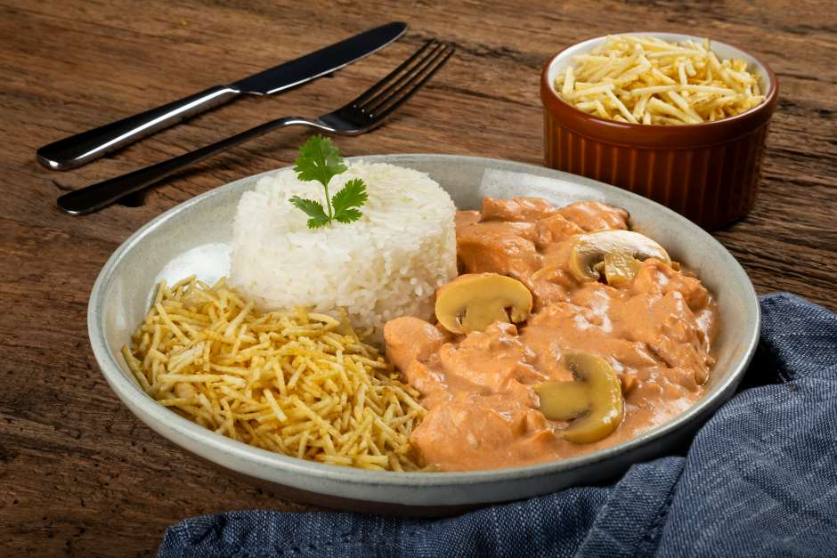
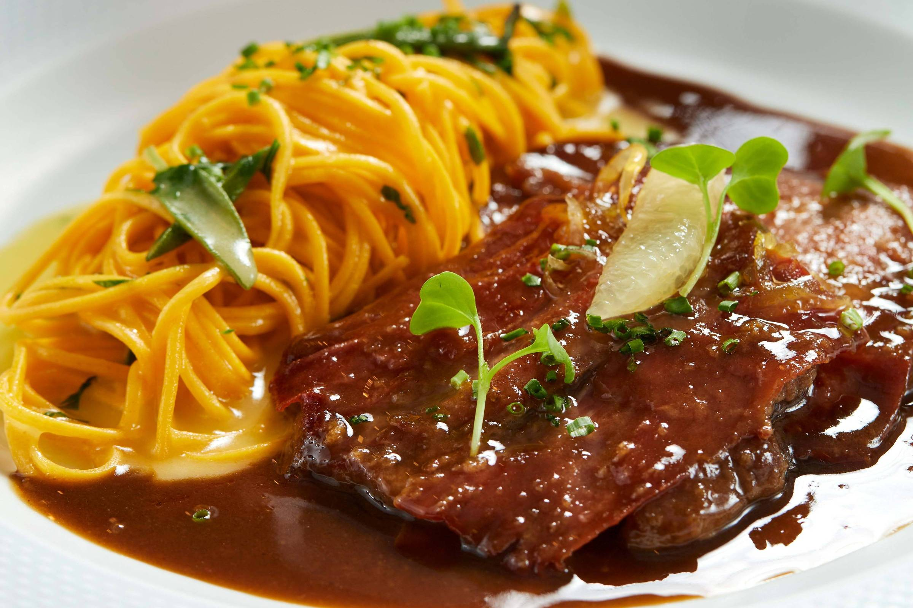

Filé à Parmegiana - Suculento filé mignon empanado, coberto com molho de tomate fresco e queijo derretido, servido com arroz branco e batatas fritas douradas.
Peito de Frango Grelhado - Peito de frango grelhado ao ponto, acompanhado de legumes salteados e purê de batatas cremoso, finalizado com um toque de ervas frescas.

Salmão ao Molho de Maracujá - Salmão grelhado e regado com um delicioso molho de maracujá, acompanhado de arroz integral e uma leve salada de folhas verdes.
Strogonoff de Carne - Clássico strogonoff de carne, feito com cubos de filé macios em um molho cremoso de champignon, servido com arroz branco e batata palha crocante.